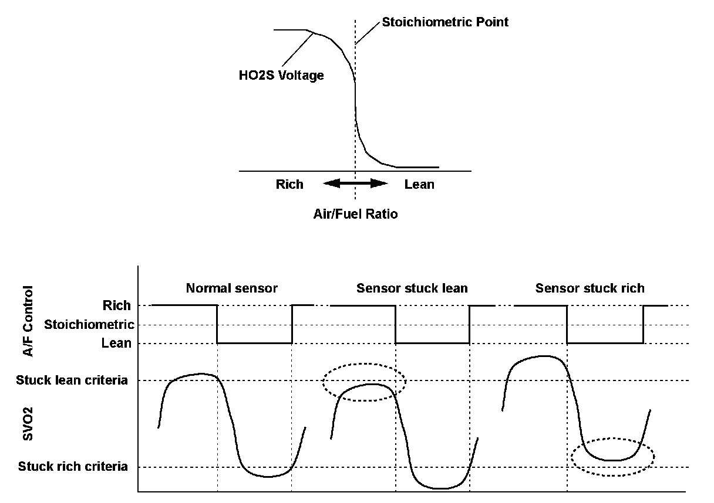
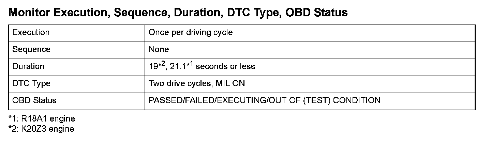
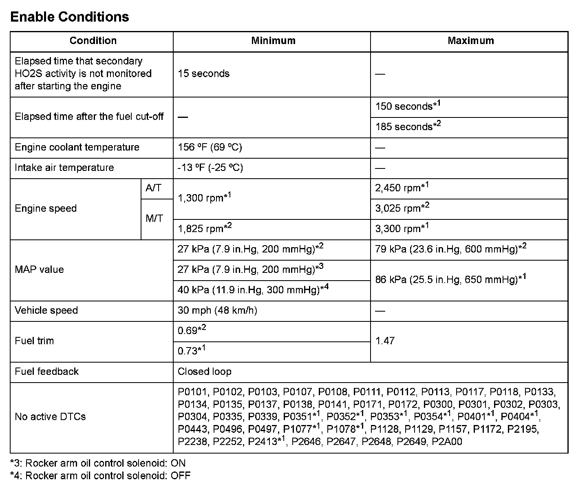

Advanced Diagnostics
DTC P2270: Secondary Heated Oxygen Sensor (Secondary HO2S (Sensor 2)) Circuit Signal Stuck Lean
General Description
The secondary HO2S detects the oxygen concentration in the exhaust gas downstream of the three way catalyst (TWC). The sensor output voltage characteristics are similar to the air/fuel ratio (A/F) sensor. The oxygen concentration is detected after the TWC during fuel feedback control using the A/F sensor, and it optimizes the fuel feedback control to maximize the effect of the TWC. If, after current is applied to the secondary HO2S heater, the secondary HO2S does not fluctuate and the output is stuck within the specified area, a malfunction is detected and a DTC is stored.

Monitor Execution, Sequence, Duration, DTC Type, OBD Status

Enable Conditions
Malfunction Threshold
The secondary HO2S output voltage is 0.650 V or less.
Driving Pattern
1. Start the engine. Let it idle until the radiator fan comes on.
2. Drive the vehicle at a steady speed of 35 mph (57 km/h) or more for at least 19*2, 21.1*1 seconds.
- Drive the vehicle in this manner only if the traffic regulations and ambient conditions allow.
Diagnosis Details
Conditions for illuminating the MIL
When a malfunction is detected during the first drive cycle, a Temporary DTC is stored in the ECM/PCM memory. If the malfunction recurs during the next (second) drive cycle, the MIL comes on and the DTC and the freeze frame data are stored.
Conditions for clearing the MIL
The MIL will be cleared if the malfunction does not recur during three consecutive trips in which the diagnostic runs.
The MIL, the DTC, the Temporary DTC, and the freeze frame data can be cleared by using the scan tool Clear command or by disconnecting the battery.